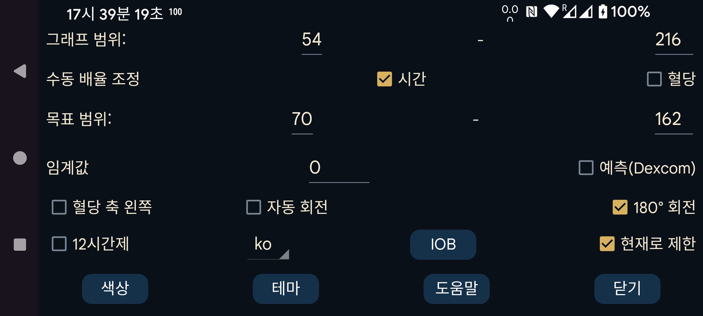

ar de es hi it ja ko nl ru tr uk uz en
낮은 값과 높은 값을 지정하여 화면 아래쪽이 최솟값, 위쪽이 최댓값에 대응하도록 합니다. 이 값은 화면에 표시된 모든 혈당 값이 이 범위 안에 있을 때만 사용됩니다. 그렇지 않으면 모든 값이 보이도록 범위가 넓어집니다. 예를 들어 3 mmol/L(54 mg/dL)과 9 mmol/L(162 mg/dL)을 지정하고 현재 화면의 모든 값이 5~6 mmol/L이면 그래프의 혈당 축은 3~9로 표시됩니다.
다음이 켜져 있으면 혈당 수동 스케일 : 화면 위쪽에서 손가락을 움직이면 그래프의 위쪽 절반을 위아래로 이동하고, 화면 아래쪽에서 움직이면 아래쪽 절반을 위아래로 이동하여 범위를 바꿀 수 있습니다.
높은 값을 쉽게 알아볼 수 있도록 화면의 높은 쪽 영역을 다른 색으로 표시합니다. 낮은 값도 마찬가지입니다. 너무 낮은 영역을 나타내는 빨간 선도 표시됩니다.
혈당 축의 숫자를 화면 가운데가 아니라 왼쪽에 표시합니다.
혈당 값의 변화율에 임계값을 적용합니다. 변화율이 0에서 적어도 이 값만큼 벗어날 때만 변화율 화살표가 수평에서 벗어납니다. 0~0.8 사이의 임의 값을 사용할 수 있습니다. 임계값은 작은 변화율을 지나치게 해석하는 것을 막습니다. 실제 추세가 내려가는데 화살표가 천천히 상승하는 것으로 표시될 수도 있습니다. 임계값을 사용하면 더 신중하게 추세를 표시합니다.
Dexcom 센서는 실제 값과 함께 예측값도 보냅니다. 검색해 보았지만 이에 대한 문서를 찾지 못했습니다. Dexcom이 최대 20분 전에 저혈당을 예측하는 알람을 지원한다는 내용만 찾았습니다. 다음을 참조하십시오: https://www.dexcom.com/g7/how-it-works#alerts
이 값들을 20분 뒤에 배치하면 잘 맞지 않았고, 10분 뒤에 배치했을 때 훨씬 더 잘 맞았습니다.
이 옵션을 켜면 이러한 예측값이 Juggluco에서 Libre 센서의 기록 값과 같은 방식으로 표시됩니다. 오른쪽 가운데 메뉴→기록의 선택을 해제하여 끌 수도 있습니다. Juggluco에서는 이 값을 알람에 사용하지 않으며, 예측이 얼마나 잘 맞는지 판단하기 위해 표시만 할 수 있습니다.
화면을 거꾸로 돌립니다. 센서를 스캔하는 동안 실수로 확인을 누르는 일이 가끔 있었기 때문에 기본적으로 켜져 있습니다.
이 설정은 Android의 자동 회전도 켜져 있을 때만 작동합니다. 휴대폰을 회전하면 그래프와 메뉴를 제외한 모든 것이 회전합니다.
이 설정은 자동 회전이 켜져 있을 때만 사용할 수 있습니다. 그래프와 메뉴가 있는 주 화면에만 적용됩니다. "텍스트 회전"을 선택하면 그래프와 메뉴의 텍스트도 회전합니다. 자동 회전을 사용하지 않을 때와 마찬가지로 가로 모드에서는 화면 왼쪽 1/4을 눌러 첫 번째 메뉴를 열고, 세로 모드에서는 화면 아래쪽 1/4을 눌러 여는 식입니다. 선택하지 않으면 그래프와 메뉴는 자동 회전이 꺼진 경우와 완전히 같은 방향을 유지합니다.
IOB는 이전에 투여한 인슐린 중 몸에 남아 있는 양을 나타냅니다. 이를 사용하려면 인슐린 투여량을 "속효성 인슐린" 범주에 속한 레이블로 입력해야 합니다. 어떤 레이블이 "속효성 인슐린" 인지 다음 위치에서 지정할 수 있습니다: 왼쪽 메뉴→설정→데이터 교환→웹 서버→입력값 제공.
"현재로 제한"을 켜면 화면에 표시되는 시간 구간을 왼쪽으로 이동하여 현재 시각이 항상 화면의 같은 위치에 오도록 합니다. 어떤 사용자는 몇 미터 떨어진 컴퓨터의 Android 에뮬레이터에서 Juggluco를 실행합니다. "현재로 제한"이 꺼져 있으면 시간이 지나면서 현재 혈당 값의 위치가 오른쪽으로 이동해 몇 시간 뒤에는 보이지 않게 됩니다. 그러면 컴퓨터까지 걸어가 화면을 몇 센티미터 스크롤해야 합니다. "현재로 제한"을 켜면 이런 번거로움이 없어집니다.
Juggluco를 선택한 언어로 표시합니다. 언어 코드를 선택하지 않으면 시스템 언어를 사용합니다.
곡선, 스캔 및 숫자의 색상을 변경합니다. 다크 모드를 전환하려면 오른쪽 가운데 메뉴→다크 모드를 사용하십시오.
GUI의 색상과 버튼 모양을 변경합니다.